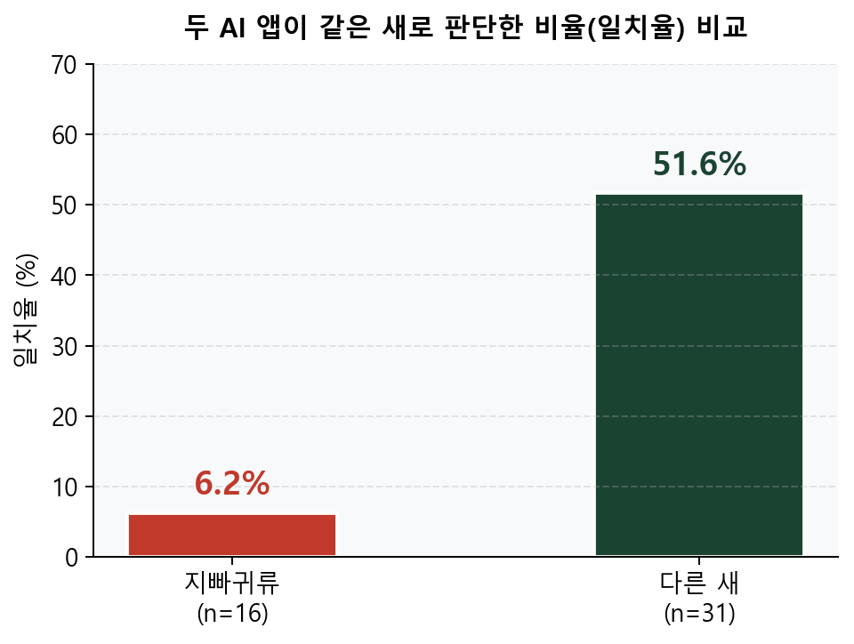
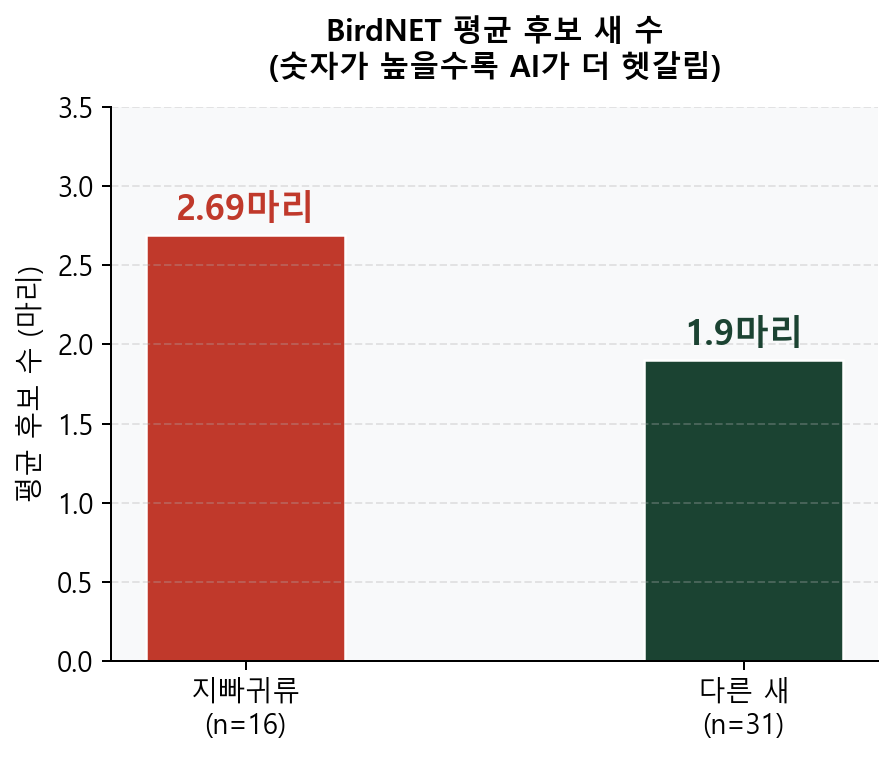
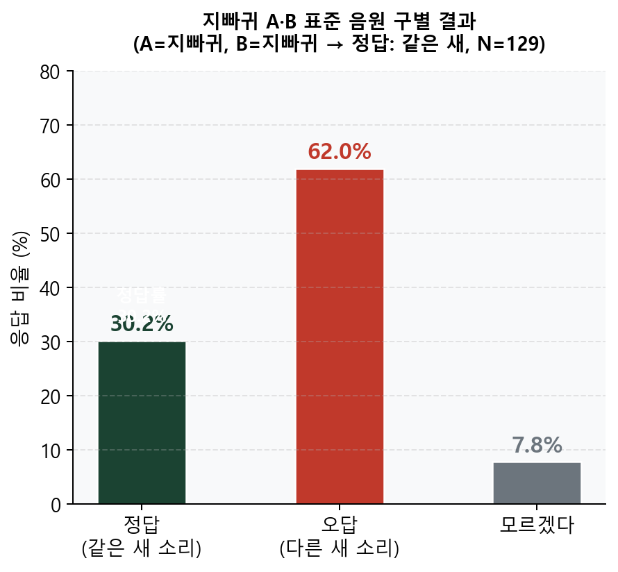
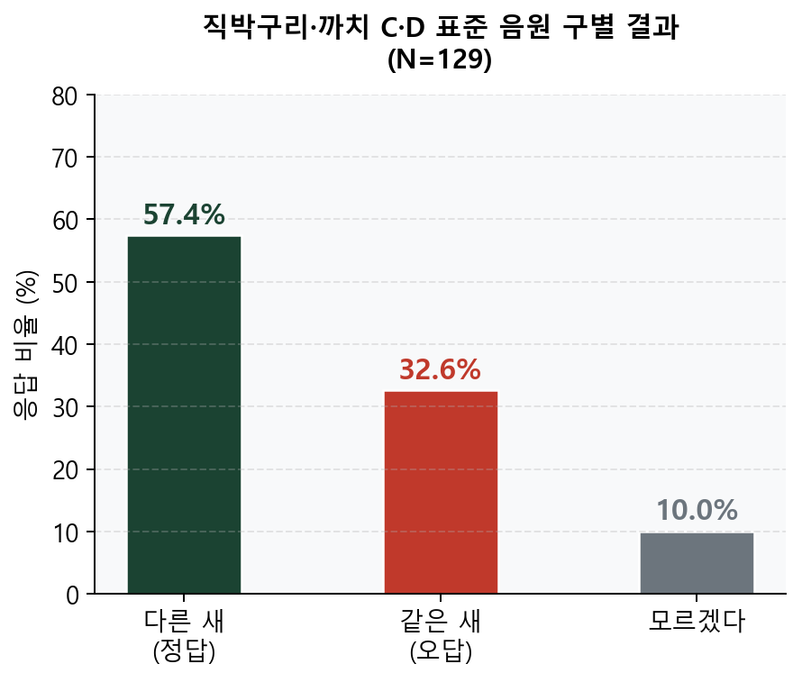
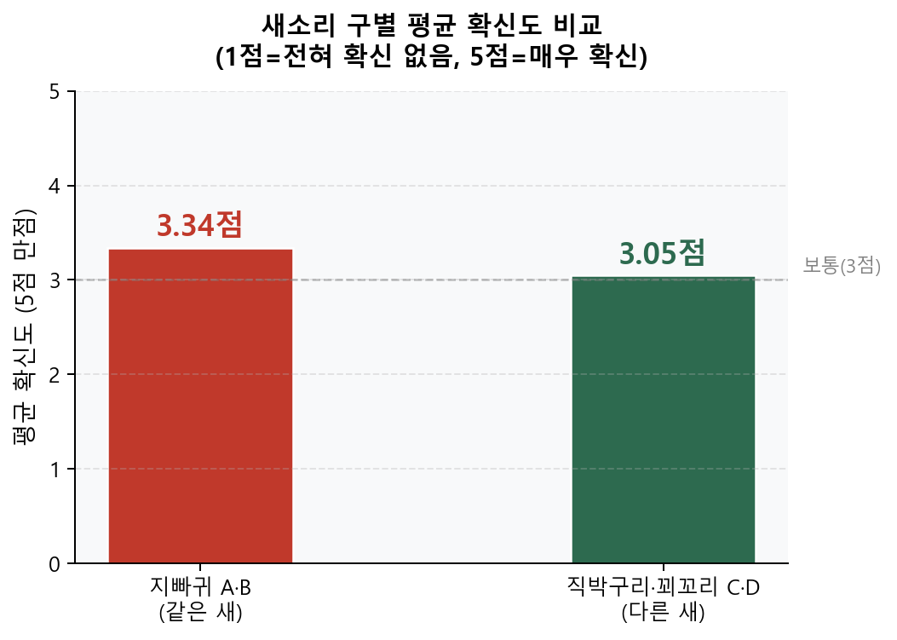
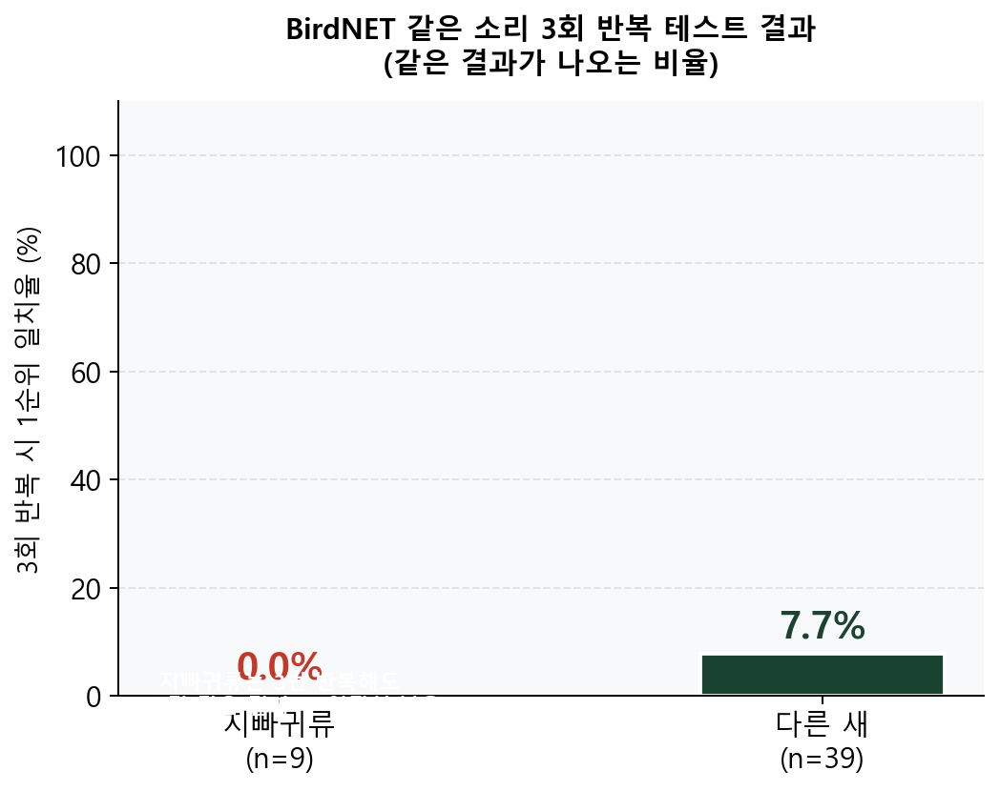
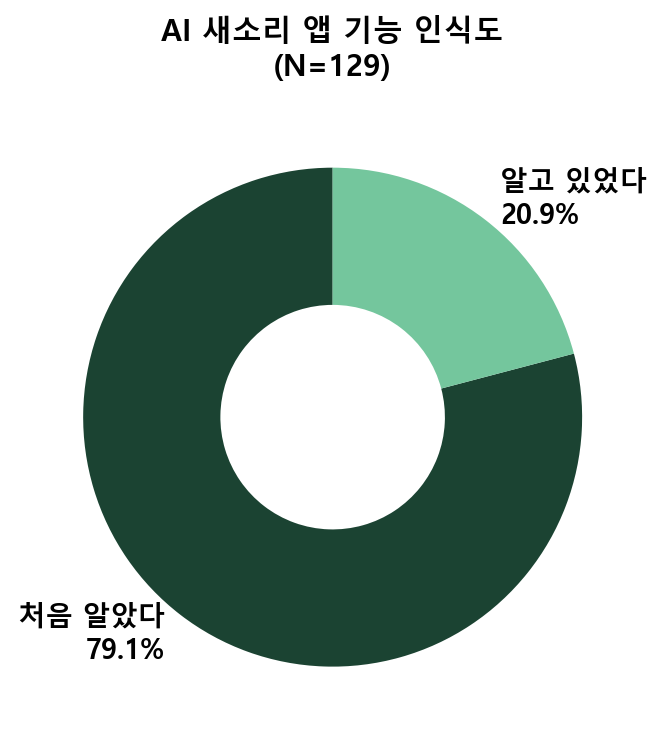
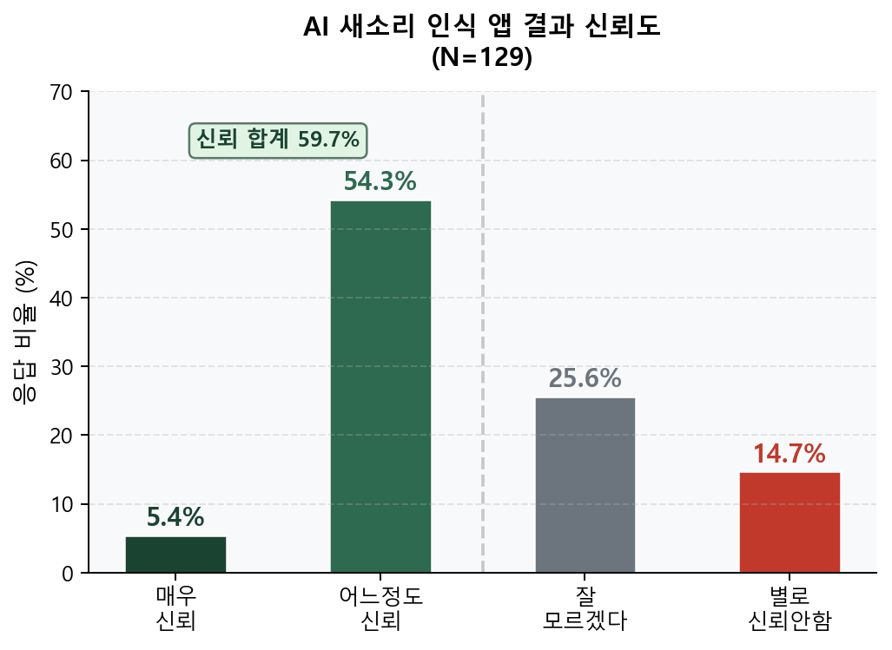
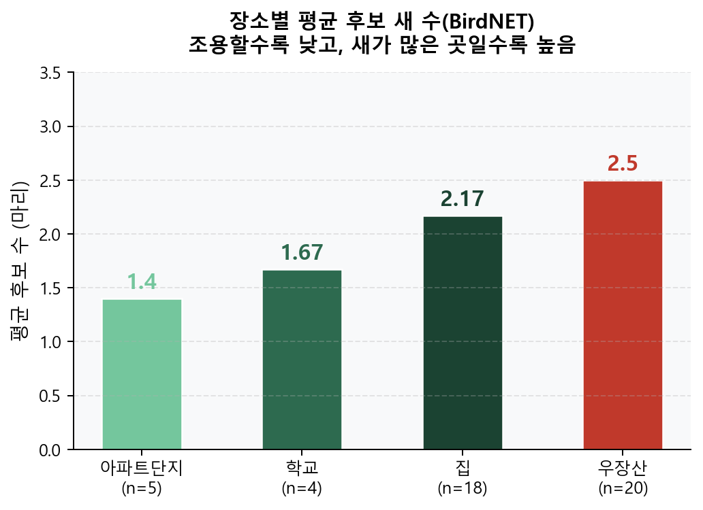
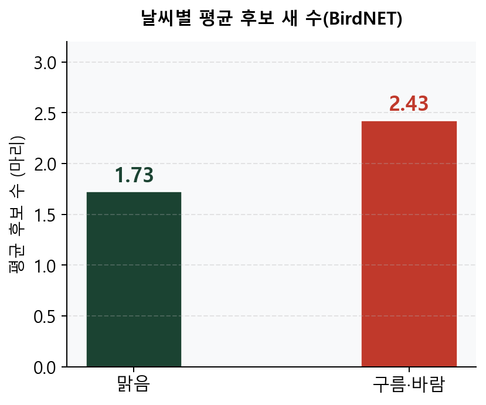

정확도(정답 맞히기) ❌
→ 일관성(같은 결과를 반복하는가) ✅
| 단계 | BirdNET의 작동 방식 |
|---|---|
| ① 캡처 | 오디오를 48kHz로 캡처, 3초 단위로 분할 |
| ② 스펙트로그램 | 소리를 멜 스펙트로그램(소리 그림)으로 변환 |
| ③ 신경망 | CNN(합성곱 신경망)으로 종별 특이 패턴 감지 |
| ④ 결과 | 녹음 위치·날짜 정보와 결합하여 후보 종 확률 산출 |
| 번호 | 연구 질문 | 가설 | 결과 |
|---|---|---|---|
| 🔬 1차 관찰·실험 데이터 (현장 녹음 47개 기반) | |||
| Q1 | AI 앱은 지빠귀류를 일관되게 식별하는가? | 지빠귀류는 후보 종 多·일치율 低 | ✅ 지지 일치율 6.2% |
| Q2 | 녹음 환경(장소·날씨)이 AI 결과에 영향을 주는가? | 시끄럽거나 바람 부는 환경일수록 후보 종 多 | ✅ 지지 우장산 2.50종 |
| 📋 2차 설문 확장 — "AI가 헷갈리면, 사람은 어떨까?" (N=129) | |||
| Q3 | 사람은 새소리를 잘 구별하는가? | 사람도 지빠귀 소리 구별 어려울 것이다 | ✅ 지지 오답+모름 38% |
| Q4 | 새 지식이 많으면 더 잘 구별하는가? | 새를 잘 아는 사람일수록 정답률 高 | ❌ 기각! "누구에게나 어렵다" |








| 새 지식 수준 | 응답자 수 | 정답(다른 새) | 오답+모름 | 정답률 |
|---|---|---|---|---|
| 조금 안다 | 56명 | 33명 | 23명 | 58.9% |
| 잘 모른다 | 71명 | 47명 | 24명 | 66.2% |
| 연령대 | 응답자 수 | 비율 | 새 지식 수준 | 응답자 수 | 비율 |
|---|---|---|---|---|---|
| 10대 | 103명 | 79.8% | 잘 모른다 | 71명 | 55.0% |
| 40~50대 | 20명 | 15.5% | 조금 안다 | 56명 | 43.4% |
| 60대↑ | 4명 | 3.1% | 잘 안다 | 2명 | 1.6% |

